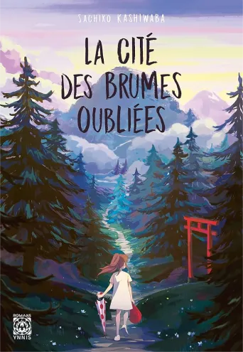
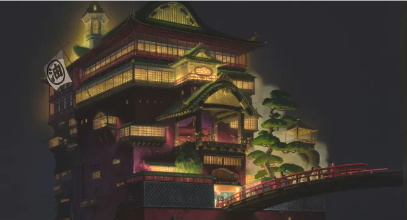
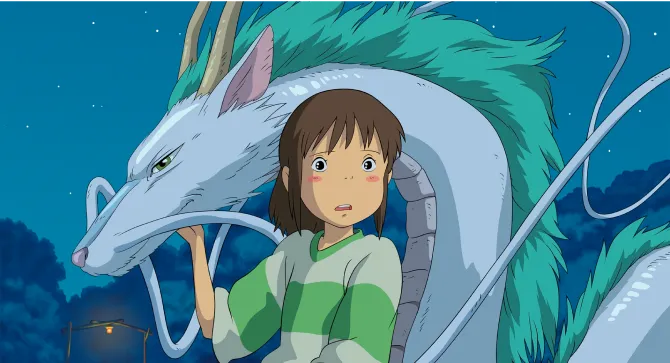

La Cité des brumes oubliées, une énigme ensorcelante
Le voyage de chihiro
Découvrez le monde envoûtant de Sachiko Kashiwaba à travers son roman "La Cité des brumes oubliées".
Plongez dans une aventure mystérieuse, où les secrets, la magie, et l'amitié se mêlent pour créer une expérience de
lecture inoubliable.
par Viktor Ghirardelli
Publié aujourd’hui à 14h45 | Temps de lecture 1 min
Un univers envoûtant
L'univers créé par Sachiko Kashiwaba dans "La Cité des Brumes Oubliées" est simplement ensorcelant. Dès les premières
pages, les lecteurs sont transportés dans une cité magique, enveloppée de brumes mystérieuses.
Le décor est si bien décrit que vous aurez l'impression d'y être vous-même. Kashiwaba maîtrise l'art de la narration,
nous offrant un monde riche en détails, où chaque rue, chaque personnage et chaque événement semblent avoir une
signification cachée.
Si vous cherchez une évasion littéraire, plongez sans hésitation dans ce monde envoûtant.

Première de couverture du livre la Cité des brumes oubliées
Secrets et magie
"La Cité des Brumes Oubliées" est un véritable régal pour les amateurs de mystère et de magie. L'histoire tourne autour
d'un groupe d'amis qui découvrent un livre mystérieux, déclenchant ainsi une série d'événements énigmatiques.
Les secrets se dévoilent lentement, et la magie devient de plus en plus présente à mesure que l'intrigue se développe.
Les lecteurs seront captivés par les nombreux mystères qui entourent la cité et ses habitants. Chaque page révèle un
nouveau secret, vous laissant constamment en haleine et désireux de savoir ce qui se passera ensuite.

Image de l’établissement des bains
Amitié et aventures inoubliables
Au cœur de "La Cité des Brumes Oubliées", se trouve un message puissant sur l'amitié. Les personnages principaux, un
groupe d'enfants courageux, montrent la force de l'unité et de la confiance. Leur voyage à travers les rues brumeuses de
la cité les rapproche et les change à jamais. Les lecteurs seront touchés par la manière dont l'amitié joue un rôle
central dans l'histoire, les incitant à réfléchir à leurs propres relations.
En fin de compte, cette aventure ne laisse pas seulement une empreinte dans le monde magique de la cité, mais aussi dans
le cœur des lecteurs.

Image de Haku en dragon et de Chihiro
"La Cité des Brumes Oubliées" de Sachiko Kashiwaba est bien plus qu'un simple livre. C'est une expérience immersive,
une
plongée dans un univers mystérieux et enchanteur. Les secrets, la magie et l'amitié se fondent harmonieusement pour
créer une histoire captivante qui vous laissera sans voix.
Si vous cherchez un roman qui vous fera rêver et réfléchir à la puissance de l'amitié, ne cherchez pas plus loin.
Laissez-vous emporter par cette énigme ensorcelante et explorez la Cité des Brumes Oubliées dès aujourd'hui.
Envie d'en découvrir davantage ?
Grâce à l'article suivant, appréciez une analyse détaillée de la musique emblématique du film. Préparez-vous à plonger
plus profondément dans l'univers fantastique de Joe Hisaishi.
One summer’s day
La musique a le pouvoir extraordinaire de nous émouvoir, de nous transporter dans des mondes imaginaires, et de créer
des souvenirs durables.
Dans cet article, nous plongeons dans la magie de Joe Hisaishi à travers son chef-d'œuvre, "One Summer's Day.".
En trois actes captivants, découvrez l'univers unique du compositeur, analysez les éléments musicaux de cette
composition, et explorez son lien étroit avec le film "Le Voyage de Chihiro."